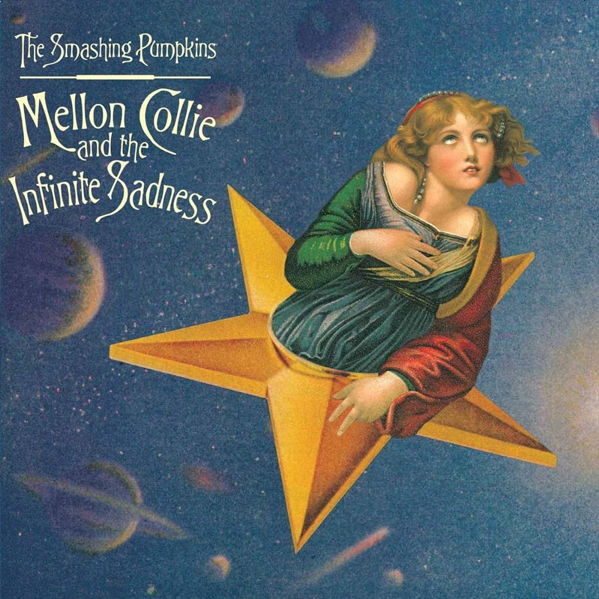

About the Band
The band Smashing Pumpkins, was formed by Billy Corgan in 1988, and is an American alternative rock band that originated in Chicago. Throughout the years the band has went through many different sounds and genres, and at the same time many different members. However, they remain a iconic group even today.
First Five Albums
- Gish
- Siamese Dream
- Mellon Collie and the Infinite Sadness
- Adore
- Machina/The Machines of God

These five albums are considered to be some of the best alternative rock albums ever produced, and cemented the Pumpkins as titans in their genre.
Founding Band Members
- Billy Corgan
- James Iha
- Jimmy Chamberlin
- D'arcy Wretzky
Links
For more information, visit the following links: